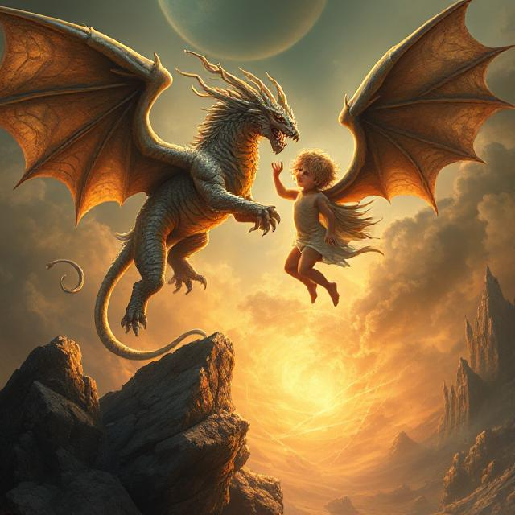

In a small mountain village, a child named Luma loved to plant flowers. One day, while digging in her grandmother’s garden, she uncovered something glowing — a smooth, warm stone with golden cracks.
That night, the stone cracked open.
Out came a baby dragon, no bigger than a cat, with silver scales and sparkling eyes.
Luma gasped. “I’ll take care of you!”
She named him Ember. As the days passed, Ember grew — fast. He helped her water the garden with tiny puffs of steam and kept crows away with friendly growls.
But the villagers were scared. “Dragons are dangerous!” they cried. “He must leave!”
Luma stood tall. “He’s not dangerous! He’s my friend!”
To prove it, she led the villagers to the garden. There, Ember gently warmed their hands, helped light lanterns, and even roasted a few chestnuts.
The villagers laughed in surprise.
“He’s... helpful!”
From then on, Ember became the village guardian, and Luma became known as the Child of the Dragon Garden.